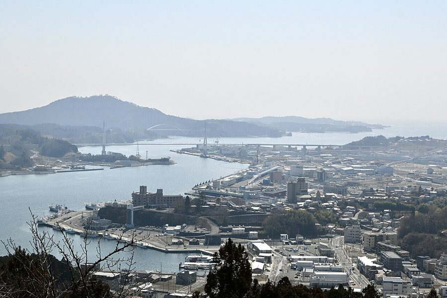
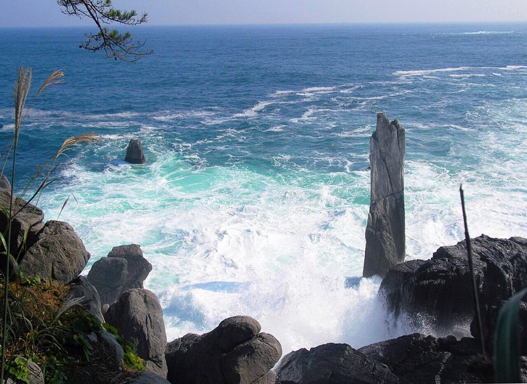
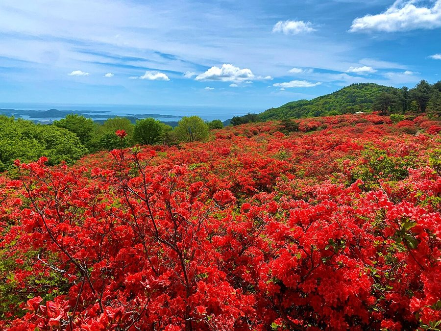
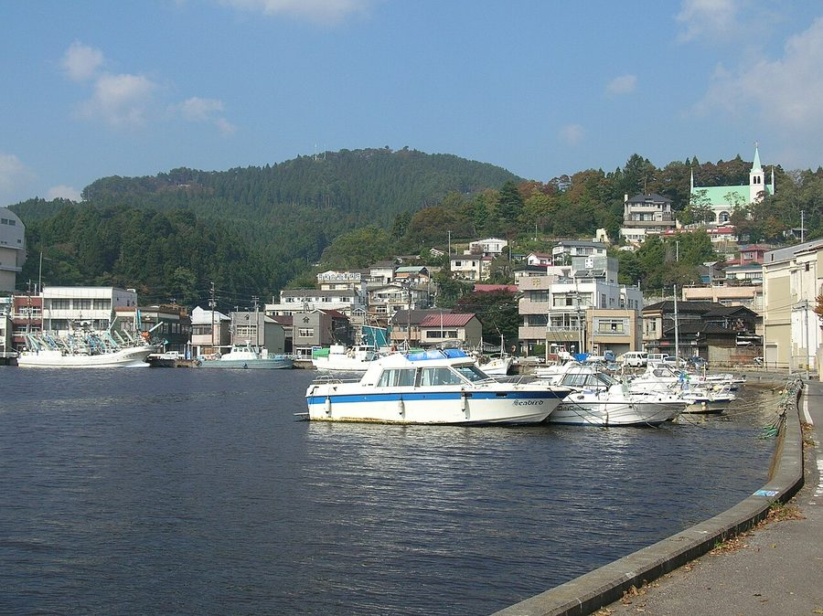

宮城県気仙沼市のソフトクリーム・ジェラート・かき氷（13件）
寄り道スポット検索アプリ「ヨッテコ」の収録データから、宮城県気仙沼市のソフトクリーム・ジェラート・かき氷を営業時間・料金つきで一覧にしました（2026年8月時点）。
最も遅くまで開いているのはアンカーコーヒー マザーポート店（21:00まで）。
宮城県気仙沼市はどんなまち？
数字で見る🔍宮城県気仙沼市
まちの横顔




- 地形と気候: 東は太平洋に面し、唐桑地区から気仙沼地区にかけてリアス式海岸が広がります。唐桑半島と岩井崎の間には波の穏やかな気仙沼湾が入り込み、湾内には大島が浮かびます。気候はケッペンの気候区分で温暖湿潤気候(Cfa)に属し、年平均気温は11.2℃です。冬季は氷点下10℃を下回ることもあります。
- 漁業のまち: 世界三大漁場の一つである金華山沖の水産資源を背景に、漁業を基幹産業としています。特定第三種漁港の気仙沼漁港をはじめとする市内の漁港は、沿岸漁業・沖合漁業に加え、世界の海を対象とする遠洋漁業の基地として機能し、造船から水産加工までの幅広い水産業が立地します。カツオやサンマを追う日本各地の漁船が行き交い、名物の気仙沼ホルモンもこうした交流から生まれました。
- 東日本大震災: 2011年(平成23年)3月11日に発生した東日本大震災では、地震そのものの被害に加え、津波や火災(津波火災)、地盤沈下によって大きな被害を受けました。
寄り道充実度（全国偏差値）
偏差値・順位は、ヨッテコ収録データ（2026年8月時点・26,033件）を市区町村別に集計した施設数の全国分布（1,728市区町村）から毎回算出しています。カードを押すとカテゴリ別の分析に切り替わります。
アイスから見た宮城県気仙沼市
アイスのお店は市内に13件、全国214位タイ。上位2割に入ります。——上位2割——探せば見つかる、という位置。
- 31%——アイスクリームを置く店は、全国の39%に届きません。カップより、その場で受け取る形に寄った構成です。
- 77%の店にソフトクリームがあります。全国水準は62%です。特産のふかひれと気仙沼ホルモンで知られる港町。77%という数字が、定番の強さを表しています。
- 8%——ジェラートを置く店は、全国の14%に届きません。品ぞろえの軸は、別のところにあります。
出典: 施設データ=ヨッテコ収録データ（26,033件・2026年8月時点）。偏差値・全国順位・全国水準は全1,728市区町村の分布から毎回算出。 / 人口=総務省「住民基本台帳に基づく人口、人口動態及び世帯数」（2026年1月1日現在） / 面積=国土地理院「全国都道府県市区町村別面積調」（2026年4月1日時点） / 森林率=農林水産省「2025年農林業センサス（農山村地域調査）」市区町村別林野率（2025年、林野率（林野面積÷総土地面積）） / 年平均気温=気象庁「平年値（1991-2020年）」。市区町村の代表点（国土交通省「大字・町丁目レベル位置参照情報」）から最も近い観測点の値 / まちの解説=日本語版Wikipedia「気仙沼市」（https://ja.wikipedia.org/wiki/気仙沼市、2026年8月21日取得、CC BY-SA 4.0） / 写真=Wikimedia Commons（各キャプションに作者・ライセンスを記載）
曜日別の営業施設数
| 月 | 火 | 水 | 木 | 金 | 土 | 日 |
|---|---|---|---|---|---|---|
| 9 | 9 | 11 | 10 | 11 | 11 | 11 |
月・火曜日が最も休みが多く（各2件が定休）、年中無休は8件です。※営業時間データのある11件で集計
施設一覧
| 施設 | 営業時間 |
|---|---|
| HATOBA ソフト | — |
| いこま青果 かき氷 | 09:00〜18:00（木休） |
| おかしの花子 松岩店 ソフト 2003年唐桑に開店。マカロンとロールケーキを融合させた独特な食感のお菓子を提供。ソフトクリームも展開。 | 09:30〜18:00 |
| はまカフェ（道の駅 大谷海岸） ソフト | 09:00〜17:00 |
| アンカーコーヒー マザーポート店 アイス 自社焙煎の新鮮な珈琲豆を全国へ届けるアンカーコーヒー。手作り焼きドーナツセットを提供し、アイスクリームも併売。 | 09:00〜18:00 ※曜日により異なる |
| ファストフード はまカフェ店 アイス | — |
| ブルーベリーハウス気仙沼・カフェ蔵ssic（くらしっく） ソフトアイス | 10:00〜17:00（月・火休） |
| メリーランド ソフト | 10:00〜17:00 ※曜日により異なる |
| モーランド本吉 ソフト | 09:00〜16:00（月・火休） |
| 半造レストハウス『おおがまテーブル』 ソフトかき氷 | 09:30〜16:30 |
| 気仙沼大島ウェルカム・ターミナル ソフトジェラート | 09:00〜17:00 |
| 道の駅 大谷海岸 ソフトアイス 気仙沼市本吉町の道の駅。「はまカフェ」で気仙沼名産ふかひれを使った珍しいソフトクリームを提供。 | 09:00〜16:00 |
| 野杜海 ソフト 地産地消をコンセプトに、魚介や地元野菜、柚子など地域食材を活かした食業を営む。ソフトクリームも提供。 | 09:00〜19:30 ※曜日により異なる |